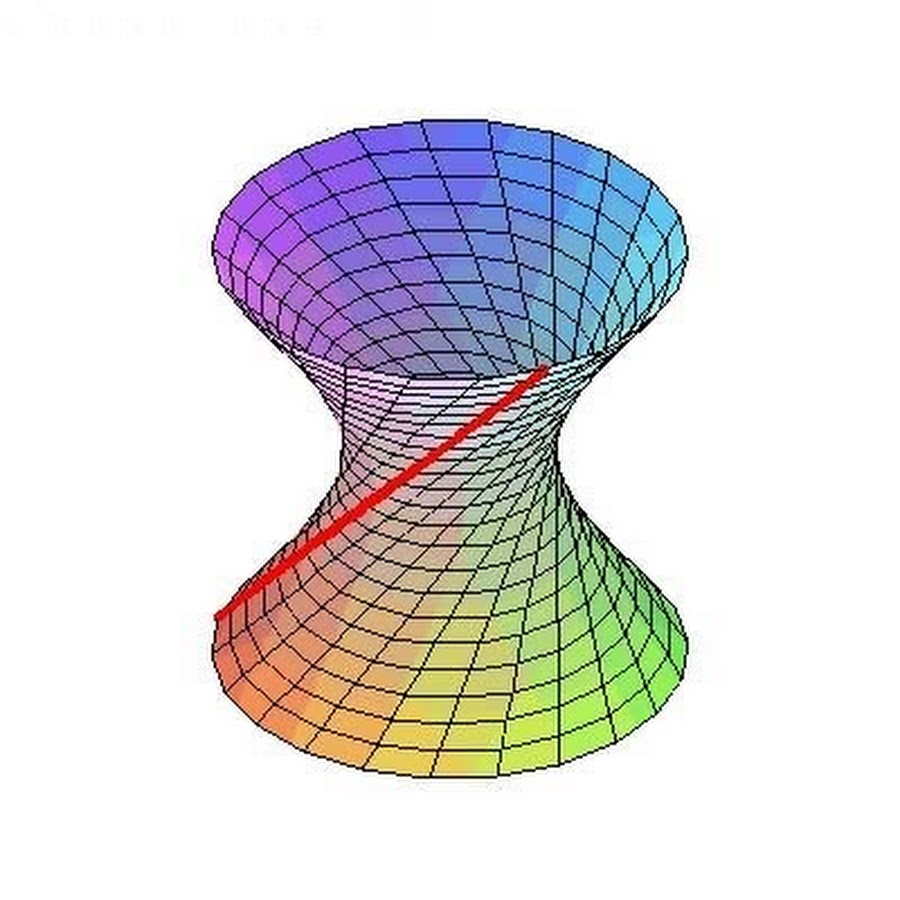

Аналитическая геометрия - это раздел математики, который изучает геометрические объекты с помощью алгебраических методов.
Примеры задач и решений в аналитической геометрии:
a =
b =
a =
b =
a =
b =
c =
 Аналитическая геометрия, также известная как координатная геометрия, является разделом математики, который изучает взаимосвязь между геометрическими фигурами и соответствующими им уравнениями в системе координат. Она позволяет нам представлять геометрические объекты, такие как линии, кривые и поверхности, с помощью алгебраических уравнений, и наоборот.
В аналитической геометрии точка на плоскости представлена ее координатами (x, y), где x и y - действительные числа. Прямая на плоскости определяется уравнением вида Ax + By = C, где A, B и C - константы. Наклон прямой задается формулой m = (y2 - y1) / (x2 - x1), где (x1, y1) и (x2, y2) - любые две точки на прямой.
В трехмерном пространстве точка представлена ее координатами (x, y, z), а плоскость определяется уравнением вида Ax + By + Cz = D, где A, B, C и D - константы. Вектор нормали к плоскости задается перекрестным произведением любых двух неколлинеарных векторов, лежащих в плоскости.
Аналитическая геометрия имеет множество практических применений в различных областях, таких как физика, инженерия и компьютерная графика. Она позволяет нам решать задачи, связанные с движением объектов в пространстве, проектировать конструкции, такие как здания и мосты, и создавать реалистичные изображения и анимацию в компьютерной графике.
Таким образом, аналитическая геометрия - это мощный инструмент, который позволяет нам понять взаимосвязь между геометрическими фигурами и соответствующими им уравнениями в системе координат. Она предоставляет нам способ представления геометрических объектов с помощью алгебраических уравнений и наоборот, что делает ее неотъемлемой частью многих областей изучения.
Какое у вас состояние разума?
Не дзен
Дзен
Полный дзен